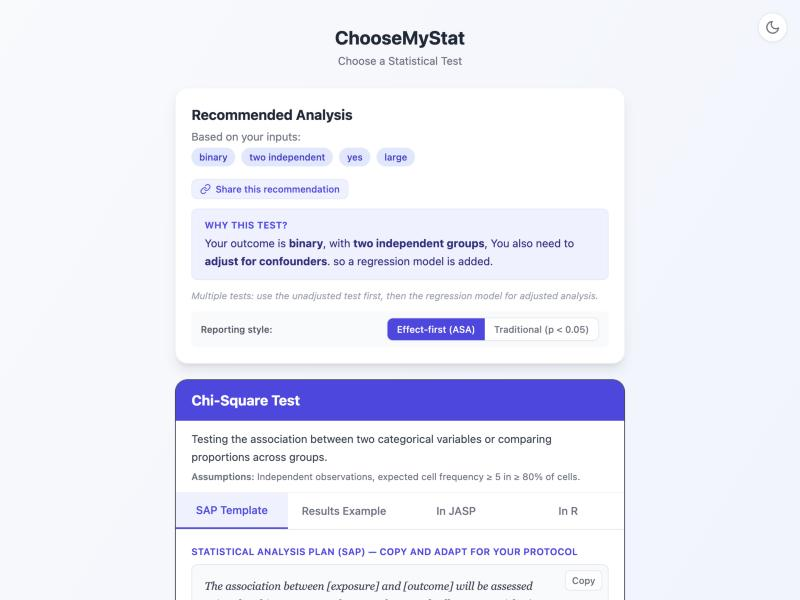

Walk through ChooseMyStat to identify the right analysis strategy when you have a binary outcome, multiple risk factors, and need to adjust for confounders.
Dr. Meena, a senior resident in Obstetrics and Gynaecology at a government medical college hospital, is studying risk factors for preeclampsia in a prospective cohort of pregnant women. She wants to identify which maternal factors independently predict the development of preeclampsia after adjusting for potential confounders.
The study follows pregnant women from their first antenatal visit through delivery, recording baseline risk factors and tracking who develops preeclampsia (defined as new-onset hypertension ≥ 140/90 mmHg with proteinuria after 20 weeks of gestation).
Go to choose-my-stat.vercel.app and click "Choose a Statistical Test".
Even though we ultimately need logistic regression, the starting point is a comparison question: we are comparing the proportion of preeclampsia between groups defined by a risk factor (e.g., high BMI vs. normal BMI). The app's decision tree will guide us from the simple chi-square test to logistic regression once we indicate the need for confounder adjustment.
The first question: "What type of outcome variable are you measuring?"
Our outcome is preeclampsia (Yes / No) — a binary (dichotomous) variable. It falls under the "Categorical" umbrella, specifically a binary categorical outcome with exactly two levels.
Next: "What is the structure of your comparison?"
We are comparing the rate of preeclampsia between two independent groups defined by a risk factor (e.g., BMI ≥ 30 vs. BMI < 30). The groups are independent — each woman is in one group only.
The app asks: "Do you need to adjust for confounders or covariates?"
This is the critical step. Dr. Meena has multiple risk factors (BMI, age, parity, family history, gestational diabetes) and needs to determine which ones are independently associated with preeclampsia after controlling for the others. A simple chi-square test cannot do this — it only tests one factor at a time without adjusting for confounders.
The app asks about your expected sample size to determine the appropriate approach.
The app recommends a two-stage analysis strategy:
Stage 1 — Chi-Square Test: Perform bivariate (unadjusted) analysis of each risk factor against the outcome using chi-square tests. This identifies which variables are individually associated with preeclampsia (typically using p < 0.20 or p < 0.25 as a liberal screening threshold for inclusion in the multivariable model).
Stage 2 — Multivariable Logistic Regression: Enter all significant (or clinically important) variables from Stage 1 into a logistic regression model. This produces adjusted odds ratios (aOR) that quantify each risk factor's independent contribution after controlling for the others.

A chi-square test tells you whether a single risk factor is associated with the outcome in isolation. But in clinical research, risk factors are often correlated with each other (e.g., older women have higher BMI, gestational diabetes is more common with higher BMI). Without confounder adjustment, you cannot determine which factors are independently predictive.
Logistic regression solves this by modelling all risk factors simultaneously. The adjusted odds ratio for each variable represents its effect on the outcome holding all other variables constant.
Sample size for logistic regression can be calculated using two approaches. Both should be checked, and the larger result should be used.
For a single predictor with a binary outcome, Hsieh's formula estimates the required sample size based on the baseline event rate (p0) and the expected odds ratio (OR):
With p0 = 0.08 (8% baseline preeclampsia rate), OR = 2.0 for the primary exposure (high BMI), α = 0.05 (two-sided), power = 80%:
n ≈ 490
The EPV rule (Peduzzi et al. 1996) states that logistic regression requires a minimum of 10 events per predictor variable to produce stable estimates with acceptable bias.
With 5 predictor variables (BMI, age, parity, family history, gestational diabetes) and a baseline event rate of 8%:
Minimum events needed = 5 × 10 = 50
Total n needed = 50 / 0.08 = 625
| Parameter | Value | Why? |
|---|---|---|
| Baseline event rate (p0) | 8% | Prevalence of preeclampsia in Indian hospital cohorts (Abalos et al. 2013) |
| Expected OR (primary exposure) | 2.0 | OR for high BMI from Srinivas et al. 2019, Indian PE risk factor studies |
| Number of predictors | 5 | BMI, age, parity, family history, gestational diabetes |
| Alpha (α) | 0.05 | Standard 5% significance level (two-sided) |
| Power (1 − β) | 80% | Conventional power for observational studies |
| Hsieh result | n ≈ 490 | Based on the primary exposure's OR |
| EPV result | n ≈ 625 | Based on 10 events per predictor variable |
Taking the larger of the two estimates (EPV rule):
You need at least 625 pregnant women to have sufficient events (50 preeclampsia cases) for a stable 5-variable logistic regression model. In a high-volume government hospital delivering 200–300 women per month, this is achievable within 3–4 months of recruitment.
ChooseMyStat provides several ready-to-use outputs for your thesis or protocol:
A pre-written Statistical Analysis Plan paragraph describing the two-stage analysis: bivariate chi-square screening followed by multivariable logistic regression.
A template showing how to report logistic regression results: a table of crude and adjusted odds ratios with 95% CIs and p-values for each predictor.
Ready-to-run R code for performing chi-square tests, fitting a logistic regression model (glm with family = binomial), and generating an odds ratio table with confint().
Guidance on checking model fit (Hosmer-Lemeshow test), discrimination (AUC/c-statistic), and collinearity (VIF) — essential for a credible logistic regression analysis.
Ready to find the right test for your study?
Try ChooseMyStat Yourself